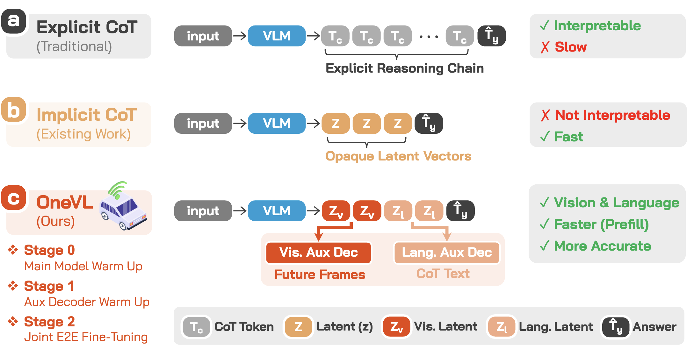
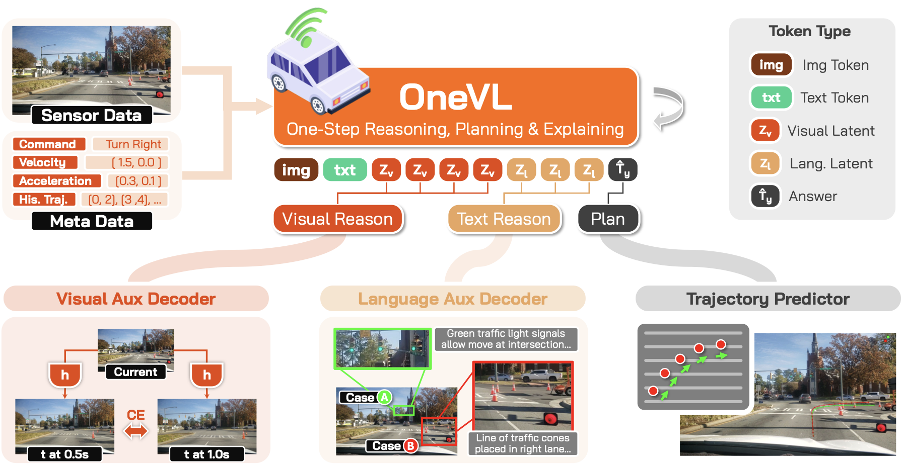
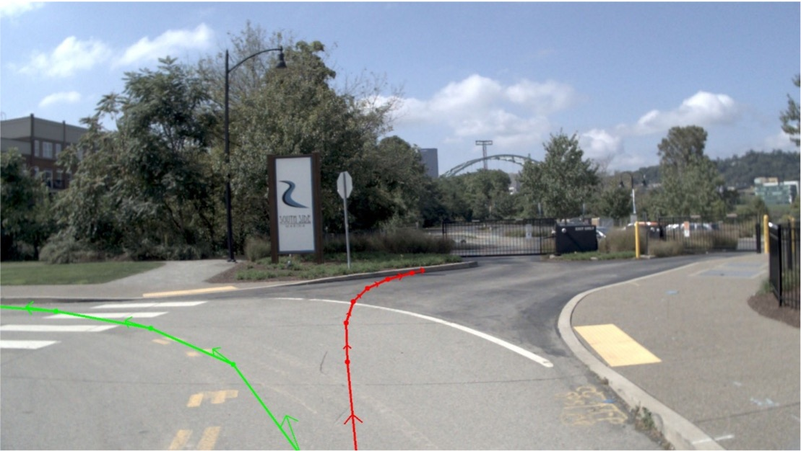
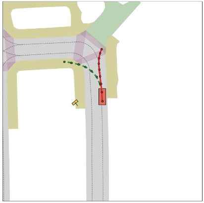
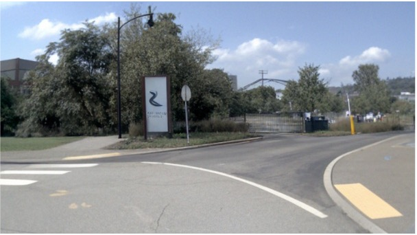
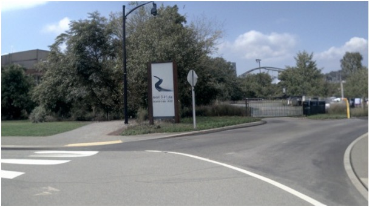

Dual Latent Tokens
35 visual + 20 language latent tokens create a tight information bottleneck that forces the model to distill only the causal structure of the scene — discouraging memorization in favor of generalizable representations.
 Xiaomi Embodied Intelligence Team
Xiaomi Embodied Intelligence Team

Chain-of-Thought (CoT) reasoning has become a powerful driver of trajectory prediction in VLA-based autonomous driving, yet its autoregressive nature imposes a latency cost that is prohibitive for real-time deployment.
Latent CoT methods compress reasoning into hidden states to reduce latency, but consistently underperform explicit CoT — because purely linguistic latents encode symbolic abstractions, not the causal dynamics that govern driving.

We argue that the compression target itself must capture genuine causal relationships. A latent vector that compresses only language is merely compressing an abstraction of the world, not the underlying physical structure.
OneVL addresses this with dual auxiliary decoders: a language decoder that reconstructs text CoT, and a visual world model decoder that predicts future-frame tokens — forcing the latent space to internalize causal scene dynamics rather than symbolic summaries.
Across four benchmarks, OneVL is the first latent CoT method to surpass explicit CoT, delivering state-of-the-art accuracy at answer-only latency.

OneVL augments a pretrained VLM with a compact latent token interface and dual auxiliary decoders for multimodal explanation. During inference, the auxiliary decoders are discarded and all latent tokens are prefilled in a single parallel pass, matching answer-only AR prediction latency.
35 visual + 20 language latent tokens create a tight information bottleneck that forces the model to distill only the causal structure of the scene — discouraging memorization in favor of generalizable representations.
Recovers human-readable CoT text from language latent states, grounding the bottleneck in semantic intent: scene interpretation, object analysis, and driving decisions.
Predicts future-frame visual tokens at +0.5s and +1.0s, acting as a world model auxiliary that grounds the bottleneck in physical scene dynamics — a causal compression target that language alone cannot supply.
Training OneVL presents a unique optimization challenge: the main VLM, the language auxiliary decoder, and the visual auxiliary decoder must all be jointly optimized, yet they have fundamentally different learning objectives. A principled three-stage pipeline progressively aligns these components.
Train the main VLM end-to-end on trajectory prediction with latent tokens embedded in each training sample. The model learns to develop meaningful latent representations and establish information routing pathways.
Freeze the main model and train the auxiliary decoders to align with the stable latent representations. The language decoder learns to decode CoT text; the visual decoder learns to predict future frames.
Jointly fine-tune all three model components. Gradients from both decoders flow back into the main model, creating a virtuous cycle that tightens the information bottleneck from both sides.
OneVL achieves state-of-the-art performance across NAVSIM, ROADWork, Impromptu, and APR1 with a 4B parameter model, surpassing prior 8B methods. Prefill inference matches answer-only prediction speed, and an MLP variant reaches 0.24s latency (4.16 Hz) for real-world deployment.
By appending a compact MLP head on top of the Qwen3-VL backbone, OneVL can predict trajectories in a single feed-forward pass while still exploiting multimodal latent supervision during training.
OneVL provides human-interpretable explanations in both language and vision. The language auxiliary decoder recovers high-quality CoT text from compressed latents, while the visual auxiliary decoder generates spatially coherent future-frame previews.
NAVSIM video log: OneVL trajectory prediction with multi-view and BEV visualization.
NAVSIM video log: OneVL trajectory prediction with multi-view and BEV visualization.
NAVSIM video log: OneVL trajectory prediction with multi-view and BEV visualization.
OneVL consistently achieves the best accuracy across all four benchmarks while matching answer-only prediction latency. Existing latent CoT methods (COCONUT, CODI, SIM-CoT) underperform even the AR baseline, whereas OneVL surpasses explicit AR CoT at a fraction of the inference cost.

On NAVSIM, OneVL achieves 88.84 PDM-score with a 4B model, surpassing 8B methods AdaThinkDrive (86.20) and LaST-VLA (87.30). Prefill inference reaches 4.46s latency — matching answer-only prediction (4.49s) while being 32% faster than explicit AR CoT (6.58s).
Performance comparisons on the NAVSIM benchmark. PDM-score (higher is better) and average inference latency (lower is better). * indicates the result is derived from the corresponding paper.
| Method | Model Size | PDM-score ↑ | Latency (s) ↓ | Interpretability |
|---|---|---|---|---|
| Previous State-of-the-Art | ||||
| AdaThinkDrive | 8B | 86.20* | — | Language |
| LaST-VLA | 8B | 87.30* | — | — |
| AR-based Baselines (4B, Qwen3-VL) | ||||
| AR Answer | 4B | 87.47 | 4.49 | — |
| AR CoT+Answer | 4B | 88.29 | 6.58 | Language |
| Latent CoT Baselines (4B, Qwen3-VL) | ||||
| COCONUT | 4B | 84.84 | 5.93 | — |
| CODI | 4B | 83.92 | 8.62 | — |
| SIM-CoT | 4B | 84.21 | 10.86 | Language |
| OneVL | 4B | 88.84 | 4.46 | Vision + Language |
On ROADWork, OneVL achieves 12.49 ADE and 28.80 FDE (pixels), significantly outperforming the previous SOTA YNet (22.68 / 80.78) and all latent CoT baselines. Inference latency is 4.71s — faster than answer-only prediction and over 2x faster than explicit AR CoT (10.74s).
Performance comparisons on the ROADWork benchmark. ADE and FDE (pixels; lower is better), latency (lower is better). * indicates the result is derived from the corresponding paper.
| Method | ADE (pixel) ↓ | FDE (pixel) ↓ | Latency (s) ↓ | Interpretability |
|---|---|---|---|---|
| Previous State-of-the-Art | ||||
| YNet | 22.68* | 80.78* | — | — |
| AR-based Baselines (4B, Qwen3-VL) | ||||
| AR Answer | 15.98 | 40.29 | 4.74 | — |
| AR CoT+Answer | 13.18 | 29.98 | 10.74 | Language |
| Latent CoT Baselines (4B, Qwen3-VL) | ||||
| COCONUT | 15.44 | 38.60 | 6.06 | — |
| CODI | 16.45 | 44.28 | 6.73 | — |
| SIM-CoT | 16.49 | 44.32 | 6.19 | Language |
| OneVL | 12.49 | 28.80 | 4.71 | Vision + Language |
On Impromptu, OneVL achieves 1.34 ADE and 3.70 FDE (meters), outperforming both Impromptu VLA (1.60 / 4.28) and explicit AR CoT (1.42 / 3.96). Latency is 4.02s — faster than answer-only prediction and 41% faster than AR CoT (6.84s).
Performance comparisons on the Impromptu benchmark. ADE and FDE (meters; lower is better), latency (lower is better).
| Method | ADE (m) ↓ | FDE (m) ↓ | Latency (s) ↓ | Interpretability |
|---|---|---|---|---|
| Previous State-of-the-Art | ||||
| Impromptu VLA | 1.60 | 4.28 | 6.10 | — |
| AR-based Baselines (4B, Qwen3-VL) | ||||
| AR Answer | 1.46 | 4.03 | 4.24 | — |
| AR CoT+Answer | 1.42 | 3.96 | 6.84 | Language |
| Latent CoT Baselines (4B, Qwen3-VL) | ||||
| COCONUT | 1.49 | 4.07 | 5.27 | — |
| CODI | 1.86 | 5.18 | 5.24 | — |
| SIM-CoT | 2.43 | 6.10 | 5.09 | Language |
| OneVL | 1.34 | 3.70 | 4.02 | Vision + Language |
On APR1, OneVL achieves 2.62 ADE (meters), the best among all methods, and 7.53 FDE, competitive with Cosmos-Reason (7.42) which uses RL-based fine-tuning. Latency is 3.23s, faster than all latent CoT baselines.
Performance comparisons on the APR1 benchmark. ADE and FDE (meters; lower is better), latency (lower is better).
| Method | ADE (m) ↓ | FDE (m) ↓ | Latency (s) ↓ | Interpretability |
|---|---|---|---|---|
| Previous State-of-the-Art | ||||
| Cosmos-Reason | 2.86 | 7.42 | — | Language |
| AR-based Baselines (4B, Qwen3-VL) | ||||
| AR Answer | 3.27 | 9.59 | 3.06 | — |
| AR CoT+Answer | 2.99 | 8.54 | 3.51 | Language |
| Latent CoT Baselines (4B, Qwen3-VL) | ||||
| COCONUT | 3.29 | 9.48 | 3.76 | — |
| CODI | 3.22 | 9.25 | 3.85 | — |
| SIM-CoT | 3.40 | 9.85 | 3.78 | Language |
| OneVL | 2.62 | 7.53 | 3.23 | Vision + Language |
Each component contributes to OneVL's performance. The visual decoder provides the largest gain (+0.87), and the three-stage training is essential — skipping it causes a catastrophic 21.71-point drop.
Each panel compares the AR baseline and OneVL side by side: front-view trajectory overlays, bird's-eye-view (BEV) plans, predicted future frames (T+1, T+2), and the decoded chain-of-thought reasoning.






If you find OneVL useful in your research, please consider citing our paper.
OneVL is developed by the Xiaomi Embodied Intelligence Team.
Note: † Corresponding Author.